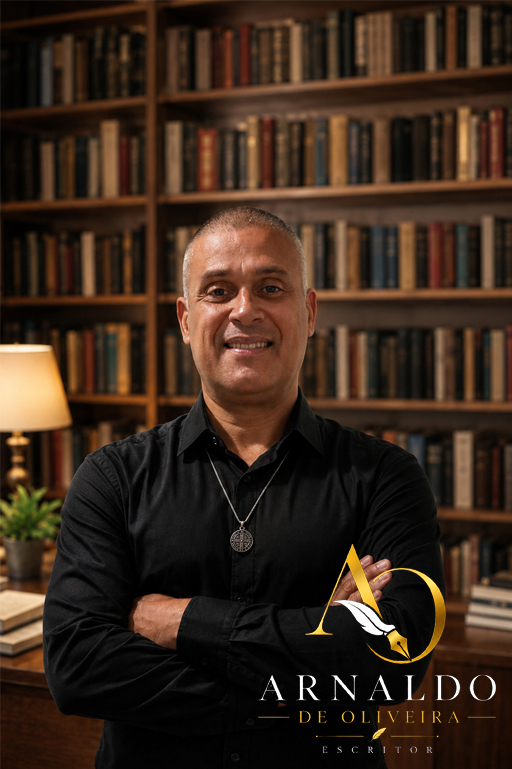
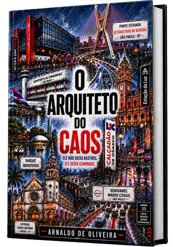

Bárbara Roque
Investigadora forense brilhante, fria e extremamente analítica. Enxerga padrões onde todos veem apenas violência.
Autor de Thriller Policial
Para completar o quebra-cabeça, falta a última peça.


Thriller Policial
Quando corpos começam a surgir em pontos estratégicos da cidade de São Paulo, a investigadora forense Bárbara Roque percebe que está diante de algo diferente.
Cada crime revela uma nova peça de um quebra-cabeça cuidadosamente construído. Quanto mais a equipe avança, mais percebe que o verdadeiro objetivo do assassino nunca foi cometer um crime.
Era mostrar a todos, um crime já ocorrido.
Universo do livro
Investigadora forense brilhante, fria e extremamente analítica. Enxerga padrões onde todos veem apenas violência.
Especialista em dinâmica de crimes, respingos e manchas de sangue. Técnico, leal e essencial para a equipe.
Médico legista responsável por transformar corpos em provas e silêncio em informação.
Especialista em perícia digital. Atua onde o crime deixa rastros invisíveis: redes, sistemas e dados.
Materiais
Contato
Entre em contato ou acompanhe as novidades sobre o livro pelas redes oficiais.